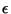
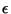

To define the concept of a Formal Language we need the ideas of an Alphabet and a string.
An alphabet is a finite set A. That's all.
A string from the finite set A is just a finite ordered list
of elements of A. Say that
 = (a1, a2, a3,..., an) is a
string from A if ai
= (a1, a2, a3,..., an) is a
string from A if ai  A for
i = 1,..., n. For historical reasons
we usually use the notation
A for
i = 1,..., n. For historical reasons
we usually use the notation
 = a1a2a3...an for a
string. The length of a string is the number of things in the
list. We usually add in one more string, the empty string
 which has nothing in it at all and has length 0.
= a1a2a3...an for a
string. The length of a string is the number of things in the
list. We usually add in one more string, the empty string
 which has nothing in it at all and has length 0.
We use the following notations: An is the set of all strings of length n from A. A+ is the set of all strings from A, excluding the empty string. A* is the set of all strings from A, including the empty string.
A Formal Language on the alphabet A is a subset
L  A*.
A*.
Bet that surprised you. Years of work by linguists and philologists and all we get is one idiot sentence as a definition. Don't be too put out, the real substance is yet to come. All we are saying so far is that our `languages' are collections of strings of items. If you think in terms of a language like English the set A is not really the `alphabet' that you learned in school, but the set of all words in the dictionary. The basic item is the word (or, more properly, stem). The `strings' that we are talking about are then the sentences of English. From this point of view English is defined as a subset of all possible sentences formed from words from the (English) dictionary. Sentences like ``the cat sat on the mat'' are in this set but sentences like 'cat sat the on mat the'' are not.
The big question, of course, is: what is the subset? Which sentences are English and which are not. We cannot, in any practical sense, answer this question by listing the elements of the set because it is infinite. English allows constructions like: I saw a cat and a dog and a giraffe and a banana and two sheep and three sheep and four sheep and .... So there is no limit to the length of an English sentence. Instead, we would like to be able to specify the subset by its properties. The usual way to do this is to state a grammar of some kind -- a set of rules which tell you what you are or are not allowed to do. That is going to be the next thing that we look at.